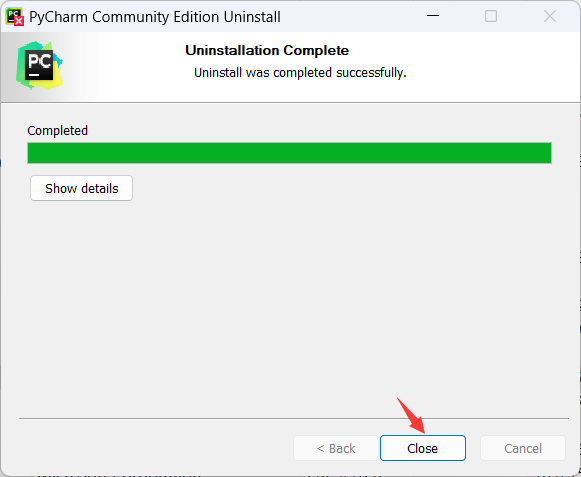
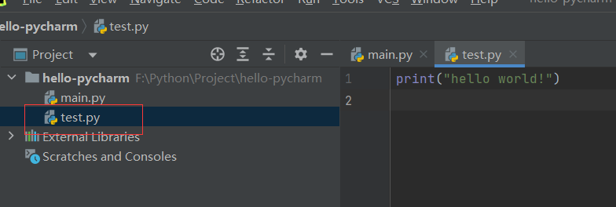
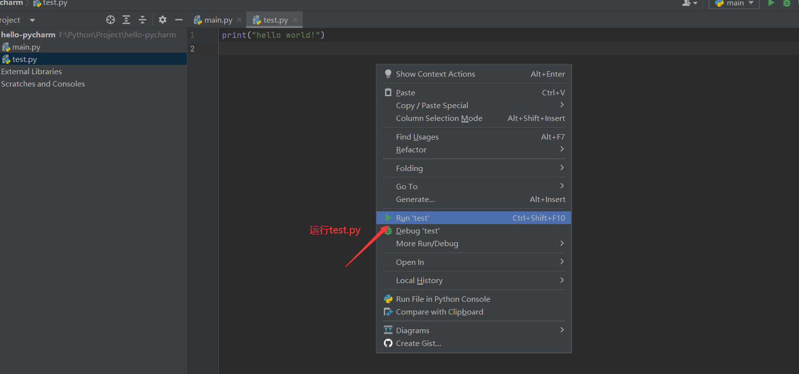
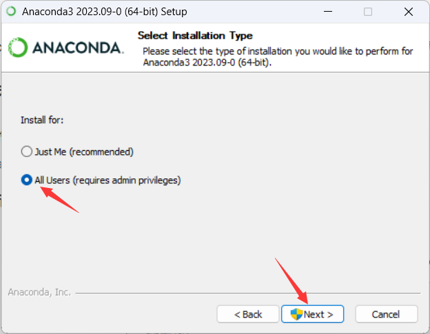
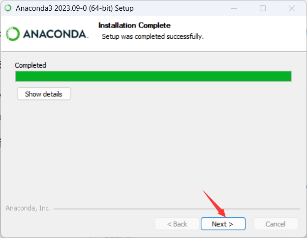
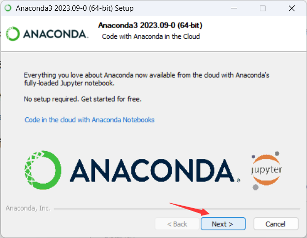
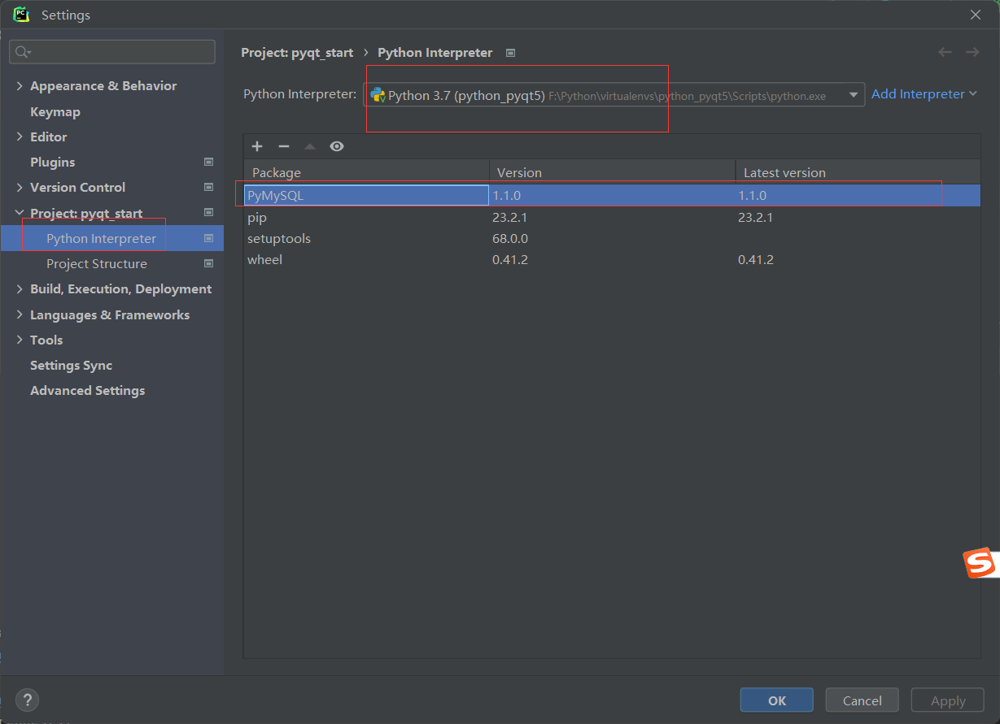
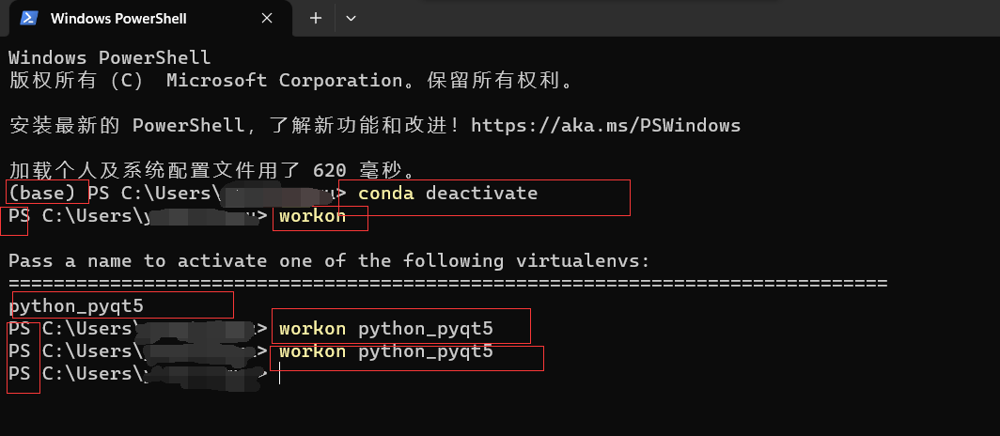

1.环境安装
1.1 Windows
1.下载地址
2.卸载

3.安装

1.2 Centos7
2.PyCharm安装
1.下载地址
2.卸载

3.安装


4.使用



3.Python虚拟环境
- 两种虚拟环境创建方式（最好只用其中一种）
- anaconda
- virtualenv
- 区别
- virtualenv：如果你本地安装的python版本是3.5，那么创建出来的虚拟环境均是基于3.5版本的空的python环境
- conda：更强大，在创建虚拟环境的时候，可以选择用python的哪个版本，如用3.5还是3.6。由于不同版本python环境间还是有些不同的，所以有时我们是需要创建出版本的python环境的，conda就可以做到
3.1 anaconda
3.1.1 安装anaconda
1.下载地址
2.安装
双击下载的exe文件安装



注册账号（可以不做）
也可以从这里注册账号（可以不做）
登录（可以不做）

配置环境变量（可以不做）
1
2
3
4
5F:\Python\anaconda3
F:\Python\anaconda3\Scripts
F:\Python\anaconda3\Library\bin
F:\Python\anaconda3\Library\mingw-w64\bin
F:\Python\anaconda3\Library\usr\bin
3.1.2 创建虚拟环境
打开Anaconda Navigator
新建虚拟环境
环境在文件夹中的位置
如果不是在anaconda 安装目录下的envs目录下，有可能会在C:\Users\用户名\.conda\envs目录下
修改虚拟环境存储路径，修改”C:\Users\用户名\.condarc”文本内容：
1
2envs_dirs:
- F:\Python\anaconda3\envsF:\Python\anaconda3\envs：是anaconda安装目录下的envs目录
修改之后，还是存储在C:\Users\用户名\.conda\envs目录下，此时可将 Anaconda3 安装路径的 Users 权限改为完全控制
常用操作命令
1
2
3
4
5
6
7
8
9
10
11
12
13
14
15
16
17
18
19
20
21
22
23
24
25
26
27
28
29
30
31（1）创建虚拟环境
conda create -n env_name（环境名称） python=3.7(对应的python版本号）
（2）激活虚拟环境
conda activate env_name（环境名称）
（3）退出虚拟环境
deactivate env_name（环境名称）
（4）删除虚拟环境
conda remove -n env_name(环境名称) --all
(5)查看已创建的虚拟环境
conda env list 或 conda info -e 或 conda info --env
(6)修改某个虚拟环境的名字：anaconda中没有重命名的命令，使用克隆删除的方法
(6.1)进入旧环境
conda activate old_name
(6.2)克隆旧环境
conda create -n new_name --clone old_name
(6.3)退出旧环境
conda deactivate
(6.4)删除旧环境
conda remove -n old_name --all
(7)查看conda的信息
conda info
3.1.3 注意点
- anacoda的虚拟环境
- cmd或者terminal终端默认是anaconda自带的base环境，如果直接pip安装第三方库就会安装在anaconda安装目录下的Lib/site-packages包下
- 可以使用（
conda activate 虚拟环境名称/activate 虚拟环境名称）切换到对应的虚拟环境下使用pip命令安装第三方库，这样安装的路径是：anaconda安装目录/envs/虚拟环境目录/Lib/site-packages包下
- 本地安装的python环境安装第三方库
- 不知道如何切换到本地安装的python环境下安装第三方库，在和anaconda一起使用时，如果用pip直接安装第三方库，会安装在anaconda安装目录下的Lib/site-packages包下
- 需要再代码中先导入，再点击install package 包名，或者在Python Interpreter界面搜索需要安装的库安装，这样安装的第三方库的存储路径就是本地python安装目录/Lib/site-packages包下
- virtualenv的虚拟环境
- 在和anaconda一起使用时，cmd或者terminal终端默认是anaconda自带的base环境，如果直接pip安装第三方库就会安装在anaconda安装目录下的Lib/site-packages包下
- 可以使用（
workon 虚拟环境名称）切换到对应的虚拟环境下使用pip命令安装第三方库，这样安装的路径是：WORKON_HOME变量值/虚拟环境目录/Lib/site-packages包下
3.2 virtualenv
3.2.1 安装virtualenv
1 | pip install virtualenv -i https://pypi.tuna.tsinghua.edu.cn/simple |
因为本次安装了anaconda，所以为了virtualenv被安装在本地安装的python目录下的\Lib\site-packages包下：
3.2.2 安装virtualenvwrapper-win
1 | pip install virtualenvwrapper-win -i https://pypi.tuna.tsinghua.edu.cn/simple |
因为本次安装了anaconda，所以为了virtualenvwrapper-win被安装在本地安装的python目录下的\Lib\site-packages包下：
3.2.3 设置环境变量WORKON_HOME
3.2.4 创建虚拟环境
创建
1
mkvirtualenv 虚拟环境名称
查看所有的虚拟环境
1
`workon`或`lsvirtualenv`
启动虚拟环境
1
workon 虚拟环境名称
退出虚拟环境
1
deactivate

删除虚拟环境
1
rmvirtualenv 虚拟环境名称
3.3 PyCharm使用虚拟环境
3.3.1 anaconda虚拟环境使用

在创建的python_pymysql虚拟环境下安装第三方库：cmd/PowerShell、terminal、Python Interpreter几个页面都可以
cmd
PowerShell（如果报错：无法激活虚拟环境；以管理员身份运行 PowerShell，并输入 set-executionpolicy remotesigned ,再输入y(如果还不行，再执行conda init powershell）

Python Interpreter

terminal（PowerShell）
如果报错：无法激活虚拟环境
解决：以管理员身份运行 PowerShell，并输入 set-executionpolicy remotesigned ,再输入y(如果还不行，再执行conda init powershell)
下载第三方库
terminal（cmd）

3.3.2 virtualenv虚拟环境使用
现在PyCharm的terminal是PowerShell
改为cmd
cmd

PowerShell
如果报错：无法激活虚拟环境

在windows下安装了python的虚拟环境管理包
virtualenvwrapper-win后，使用workon命令的时候，只能在cmd命令窗口下使用，但是powershell下是不管用的，因为workon的脚本只有bat，没有ps1的解决方案（我没试过）：在同级目录下创建
workon.ps1文件，并写入以下内容，可以直接在PowerShell下使用workon命令（参考博客：https://blog.csdn.net/a15561415881/article/details/129545858）1
2
3
4
5
6
7
8
9
10
11
12
13
14
15
16
17
18
19
20
21
22
23
24
25
26
27
28
29
30
31
32
33
34
35
36
37
38
39
40if (-not (Test-Path env:WORKON_HOME))
{
$WORKON_HOME = '~\Envs'
} else {
$WORKON_HOME = ($env:WORKON_HOME).Replace('"','')
}
if (-not (Test-Path env:VIRTUALENVWRAPPER_PROJECT_FILENAME)) {
$VIRTUALENVWRAPPER_PROJECT_FILENAME = '.project'
} else {
$VIRTUALENVWRAPPER_PROJECT_FILENAME = ($env:VIRTUALENVWRAPPER_PROJECT_FILENAME).Replace('"','')
}
if ($args.length -eq 0) {
echo "Pass a name to activate one of the following virtualenvs:"
echo ==============================================================================
(Get-ChildItem -Path $WORKON_HOME).Name
return
}
$VENV = $args[0]
if (!(Test-Path -Path ("$($WORKON_HOME)\$($VENV)"))) {
echo ("virtualenv $($VENV) does not exist")
echo "Create it with 'mkvirtualenv $($VENV)'"
return
}
if (!(Test-Path -Path ("$($WORKON_HOME)\$($VENV)\Scripts\activate.ps1") )) {
echo "$($WORKON_HOME)$($VENV)"
echo "doesn't contain a virtualenv (yet)."
echo "Create it with 'mkvirtualenv $($VENV)'"
return
}
iex ("$($WORKON_HOME)\$($VENV)\Scripts\activate.ps1")
if (Test-Path -Path ("$($WORKON_HOME)\$($VENV)\$($VIRTUALENVWRAPPER_PROJECT_FILENAME)")) {
iex "cdproject"
}
Python Interpreter
terminal（PowerShell）
如果报错：无法激活虚拟环境
解决方案同上
也可以先界面操作切换环境，再打开terminal
安装第三方库
terminal（cmd）
3.4 补充：pip通过txt文件批量下载第三方库
如果有一个文本文件(通常是requirements.txt)，其中列出了需要安装的Python包及其版本号，可以使用：
1
pip install -r requirements.txt -i https://pypi.tuna.tsinghua.edu.cn/simple
其中，requirements.txt是文本文件名。该命令会读取该文件中列出的包名及其版本号，并自动安装每个包。请确保文本文件中列出的每个包都可以从 pip源中下载到
如果你想要将已安装的包列表保存为文本文件，可以使用以下命令：
1
pip freeze > requirements.txt
这个命令会将当前环境中已经安装的所有包及其版本号输出到一个文本文件中，可以将该文件命名为 requirements.txt，以便后续使用
4.基础语法
https://gitee.com/two-dogs-speak/python_start
5.多线程
6.数据结构
7.pymysql
8.pytest
9.pyqt
10.flask
https://gitee.com/two-dogs-speak/flask_start
11.爬虫
https://gitee.com/two-dogs-speak/spider_start